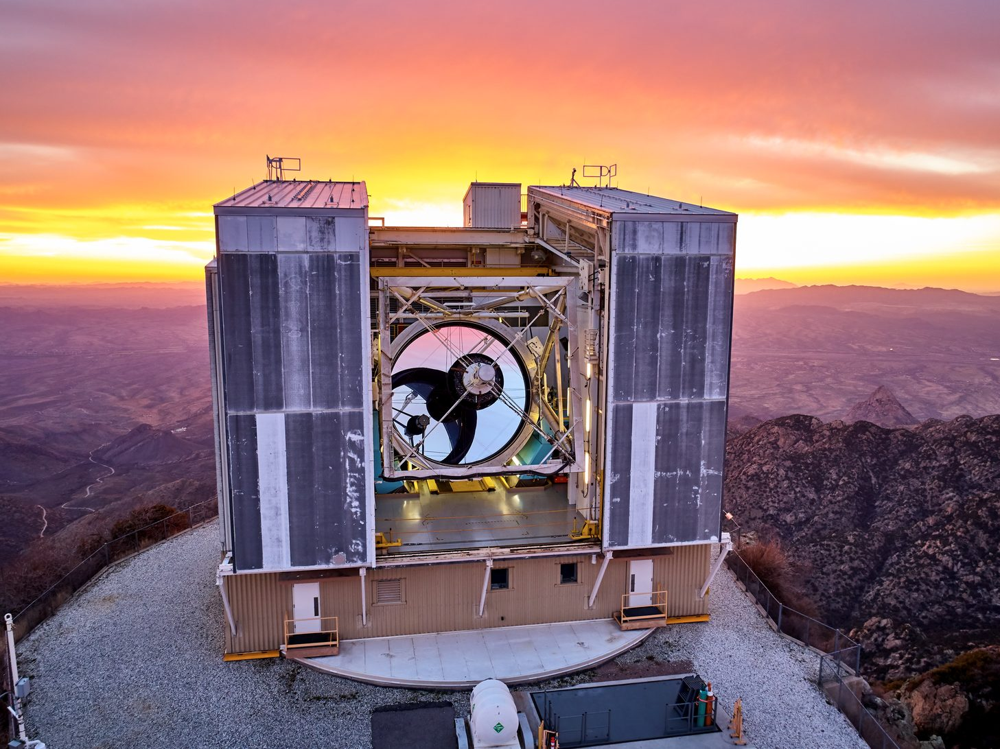
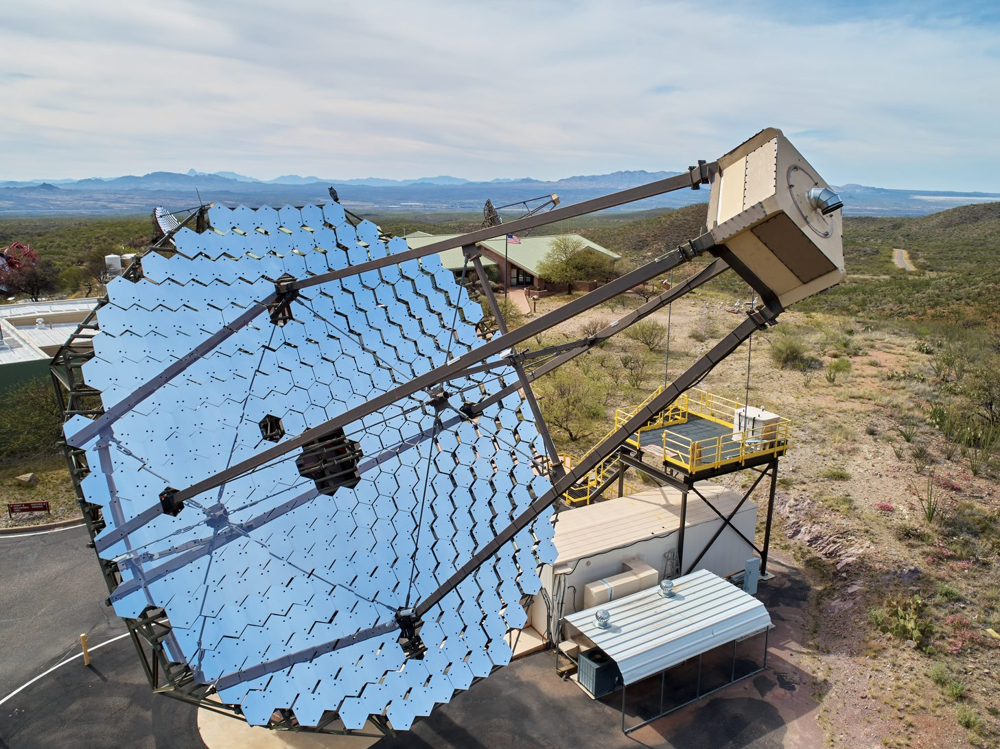
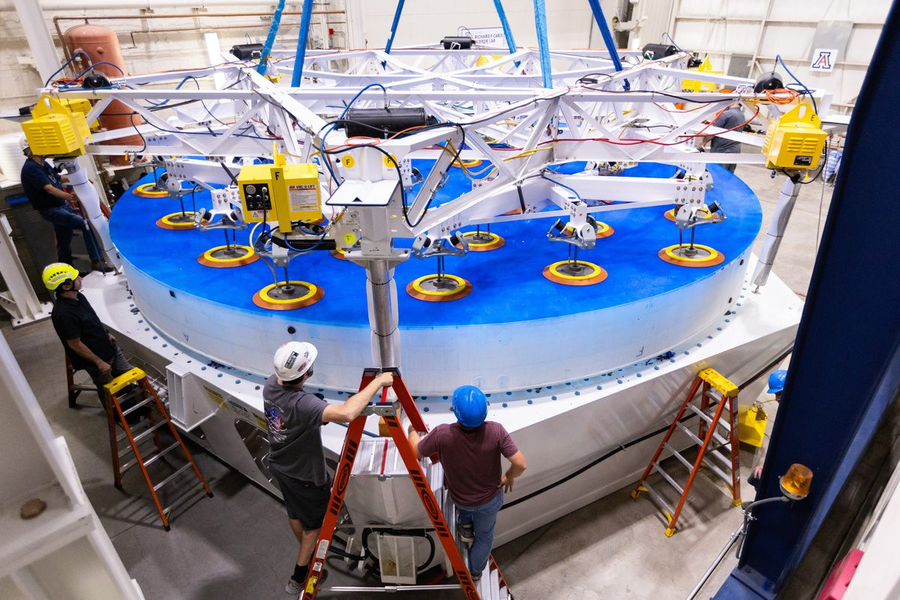

Itinerary
DAY 1 | April 15 | Arrival and Welcome Dinner
Participants arrive in Tucson, Arizona in time to settle in at the Omni Tucson National Resort & Spa before joining Smithsonian Astrophysical Observatory leadership, Advisory Board members and SNAC members at 6 pm for a welcome dinner at Bob's Steak and Chophouse, located on site.

DAY 2 | April 16 | Whipple Observatory Tour & Evening Star Party
After breakfast on your own, Advisory Board members will have working committee meetings at the Omni Tucson Resort, while SNAC members enjoy some free time at the resort. Then all participants will board a coach bus to start our journey to the Fred Lawrence Whipple Observatory in Amado, Arizona.
Perched on Mt. Hopkins amid Southern Arizona's famed dark skies, the Fred Lawrence Whipple Observatory is a cornerstone of Smithsonian astronomy. Participants will experience the observatory's world-class facilities, including the VERITAS gamma-ray observatory.
A Sonoran-inspired dinner will be served at the top of Mt. Hopkins at the observatory dormitories near the Ridge telescopes. After dinner, we will have a sunset Star Party at the MMT Observatory with eyepiece observing before going back down the mountain and back to the Omni Tucson resort.

DAY 3 | April 17 | Mirror Lab Tour & Advisory Board Meeting
After breakfast on your own, we will depart on a coach bus for the Richard F. Caris Mirror Lab at the University of Arizona. The Mirror Lab is a world-renowned engineering facility where giant lightweight telescope mirrors are cast and polished, supporting many of the world's most ambitious astronomical projects, including the Giant Magellan Telescope. We will have a catered lunch at the University of Arizona, and then the Advisory Board will conduct its business meeting.
SNAC Members will depart at 1 pm after lunch. Board Members will depart after the business meeting ends at 6 pm.

DAY 4 | April 18 | Departure
Participants check out of the hotel and depart for home.
More details and pricing forthcoming.